Project 1: Tech Resources
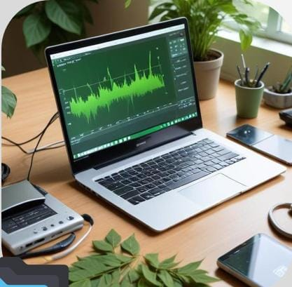
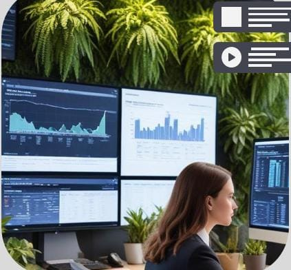
Data Collection Tools
Data collection tools are essential for sustainability management as they facilitate the gathering and analysis of data related to greenhouse gas emissions, waste production, and energy consumption. Such tools provide a holistic view of an organization's environmental impact, enabling effective decision-making and strategy development towards sustainability goals.
Performance Tracking Software
Performance tracking software enables organizations to monitor their ESG (Environmental, Social, and Governance) performance in real-time. Implementing solutions like Qlik allows for advanced data visualization and analysis, leading to the identification of patterns and trends. This functionality assists companies in understanding their sustainability standing and making data-driven decisions.
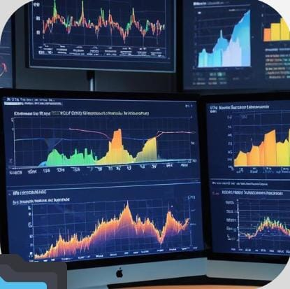
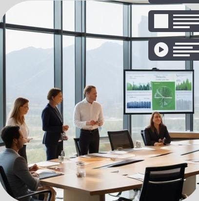
Environmental Impact Solutions
Environmental impact solutions are critical for organizations aiming to reduce their carbon footprint and manage their overall sustainability practices. These solutions provide insights into environmental risks and opportunities throughout various operations. By facilitating the analysis and monitoring of emissions and waste, these tools empower companies to meet their sustainability goals and comply with regulations.
Key Software
Qlik for ESG Analysis
Qlik is a powerful Business Intelligence tool designed for data analysis and visualization tailored to ESG performance. It allows organizations to track their environmental, social, and governance metrics effectively. With its advanced analytics capabilities, users can easily identify patterns and correlations within their ESG data, enabling better strategic decisions aimed at improving sustainability outcomes.
SAP Sustainability Control Tower
SAP Sustainability Control Tower provides a comprehensive solution for organizations to monitor and optimize their sustainability efforts. By offering real-time data analytics, this platform allows companies to evaluate their adherence to ESG goals, identify sustainability-related risks, and track compliance with international regulations. The Control Tower serves as a centralized hub for reporting and performance evaluation, driving continuous improvement.
SAP Sustainability Footprint Management
SAP Sustainability Footprint Management focuses on helping organizations manage their environmental footprint with an emphasis on carbon emissions. It empowers businesses to analyze and report on environmental impacts throughout their value chain. This solution facilitates the identification of sustainability-related risks and opportunities, enabling organizations to make informed decisions and adjust their operations accordingly to meet sustainability targets.
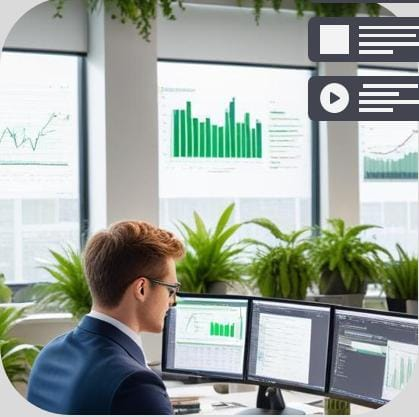
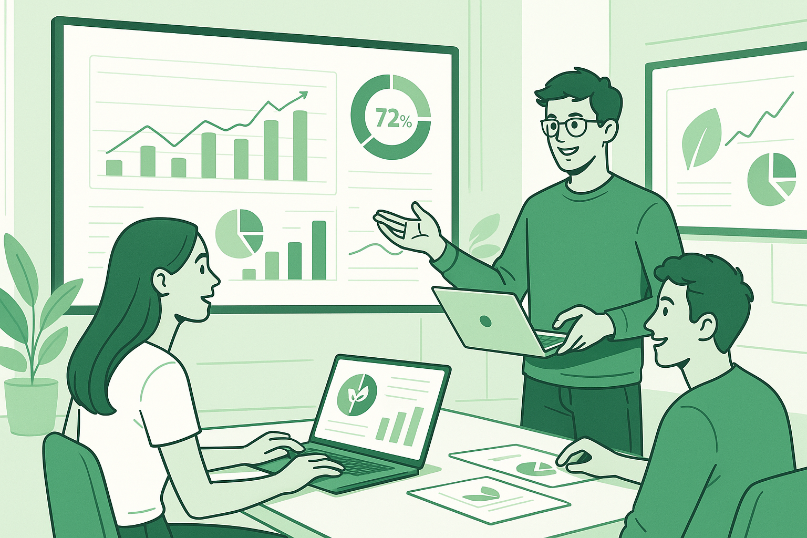
Conclusions
In summary, utilizing technological resources such as data collection tools and performance tracking software is essential for effective sustainability management. Implementing solutions like Qlik, SAP Sustainability Control Tower, and SAP Sustainability Footprint Management equips organizations with the necessary tools to analyze their environmental impact, track progress against ESG goals, and foster a culture of continuous improvement in sustainability.
Project 2: SDG 9
ODS 9: Indústria, Inovação e Infraestrutura para um Futuro Sustentável
In this presentation, we explore the challenges and opportunities of SDG 9, essential for global economic and technological growth. SDG 9 aims to build resilient infrastructures, promote inclusive and sustainable industrialization, and foster innovation. Get ready for a journey of discoveries and insights on how we can build a better future for everyone.
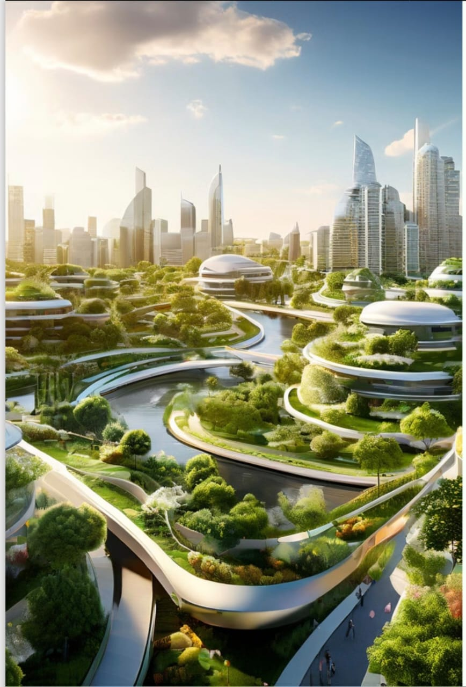
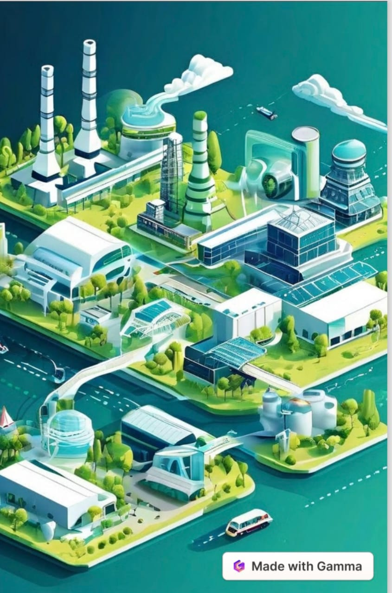
What is ODS 9?
SDG 9 aims to build resilient infrastructure, promote inclusive an sustainable industrialization, and foster innovation. The main target include developing quality infrastructure, increasing access to financial services for small industries, and modernizing industrial infrastructure.
- Resilient Infrastructure: Build infrastructure capable of withstanding natural disasters and climat change.
- Inclusive Industrialization: Ensure that everyone benefits from industrial growth, with a focus on equal opportunities.
- Fostering Innovation: Encourage new ideas and technologies to drive sustainable development.
Goals of ODS 9
Goal 9 seeks to build resilient infrastructure, promote inclusive and sustainable industrialization, and foster innovation, setting ambitious targets for 2030. These targets address everything from developing quality infrastructure to strengthening scientific research and access to technology.
- Quality Infrastructure:Develop reliable and sustainable infrastructure to support economic development and human well-being.
- Inclusive Industrialization: Increase the industry's share of employment and GDP, especially in the least developed countries.
- Access to Financial Services: Facilitate access to financial services, including affordable credit, for small industries.
- Sustainable Infrastructure: Modernize infrastructure to make it sustainable and resource-efficient.
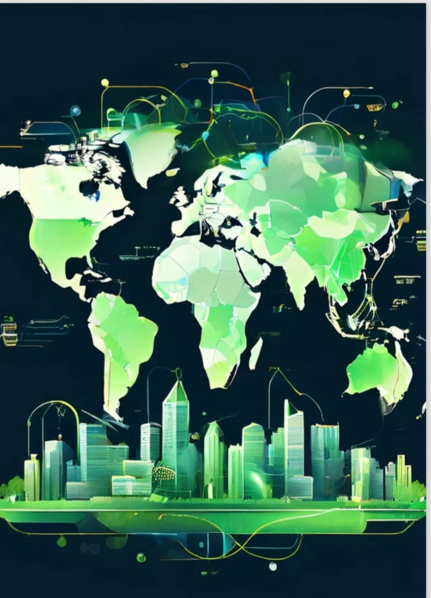
Challenges for the Development of ODS 9
Inadequate Infrastructure: Developing countries urgently need roads, energy, and digital connectivity.
- Quality Infrastructure:Develop reliable and sustainable infrastructure to support economic development and human well-being.
- Limited Acces to Tecnology: Economic barriers hinder the adoption of advanced and innovative technologies.
- Lack of Investment: The lack of financial resources prevents the development of sustainable projects.
Success Stories
Countries like China and Germany showcase how strategic investments and policies can unlock ODS 9’s potential.
- China: Massive investments in infrastructure and technology are driving economic growth and connectivity across the country.
- Germany: Industry 4.0, with a focus on digitalization and renewable energy, is enhancing industrial efficiency and sustainability.
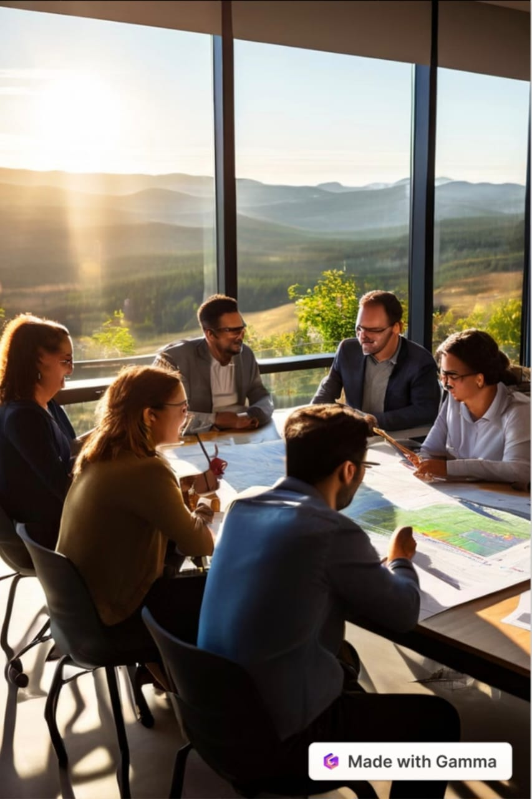
The Role of Businesses and Society
Achieving SDG 9 requires a joint effort among businesses, government, and society. Companies must invest in R&D and adopt sustainable processes; society can encourage greener practices through conscious consumption; and public policies should foster innovation and resilient infrastructure.
- Business: Invest in R&D and adopt sustainable practices.
- Society: Demand greener products and mindful consumption.
- Government: Provide policies that boost innovation and resilient infrastructure.
The Future of SDG 9
Technological trends like IoT and AI will shape a sustainable industry, while global partnerships are crucial for inclusive infrastructure and widespread innovation.
- IoT and AI: Revolutionizing infrastructure and resource efficiency.
- Sustainable Industry: Circular economy ensures resource optimization.
- Global Partnerships: Collaborations accelerate progress toward SDG 9.
Investments in Infrastructure and Technology + Conclusion
Studies highlight the urgency of funding resilient infrastructure and advanced technologies to meet SDG 9 goals. With proper investments and alignment across sectors, challenges can become opportunities, building a more prosperous and equitable world.
- Infrastructure Funding: Essential for boosting economic growth.
- Technology Adoption: Enhancing innovation and sustainability.
- Collaboration: Governments, businesses, and society must unite for SDG 9.
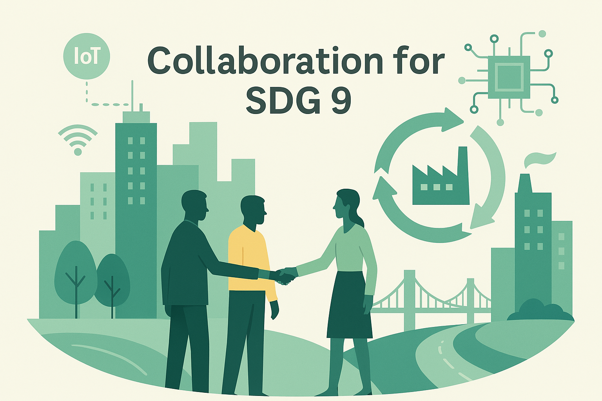
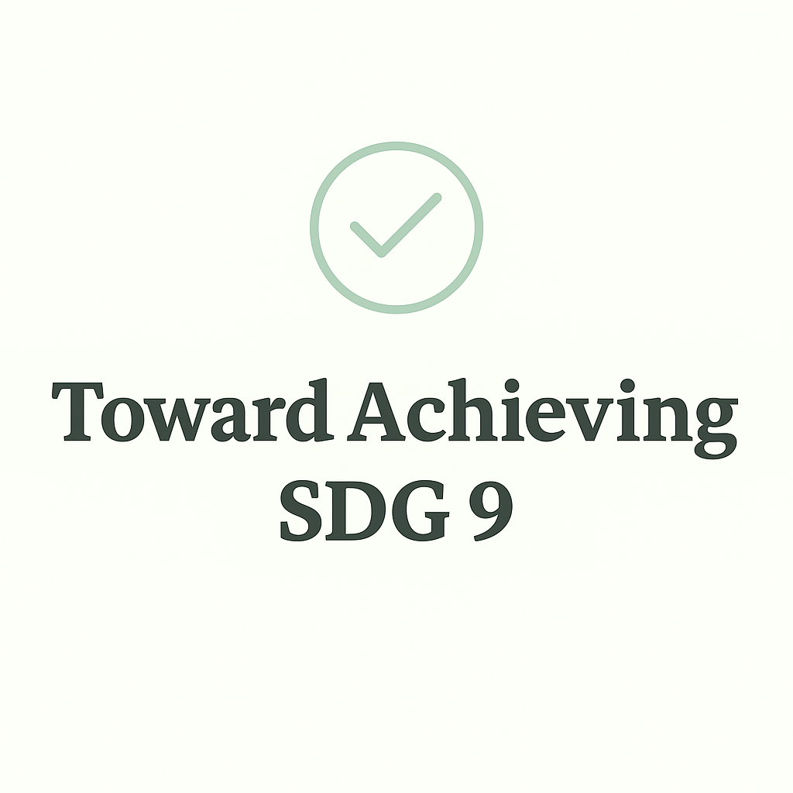
Conclusão
ODS 9 is key to building a more equitable and sustainable world, where industry, innovation and infrastructure drive progress for all. A joint effort between governments, businesses and society is crucial to advance this ODS and secure a better future for coming generations. Together, we can turn challenges into opportunities and build a more prosperous and equitable world.
Project 3: Sustainable Tech
Technology as a Sustainable Resource
Sustainable technology aims to conserve natural resources, promote social and economic development, and ensure quality of life for future generations.
[Insert image]
[Insert image]
Introduction
Sustainable technology refers to the set of techniques, methods, and processes that enable the production of goods and services with a lower environmental impact.
- Conservation of natural resources
- Reduction of pollution and waste
- Energy and economic efficiency
Role of Technology
- Replacing non-renewable resources
- Increasing device efficiency
- Preventing environmental impacts
[Insert image]
[Insert image]
Sustainable Technology in Daily Life
- Use energy-efficient appliances
- Utilize renewable energy sources
- Reduce water consumption with smart systems
- Opt for sustainable transportation
- Digitize processes to minimize paper waste
Circular Economy and Sustainability
The circular economy seeks to reduce waste and reuse materials, making products more durable and sustainable.
Applied Technologies:
- Advanced plastic recycling
- Biodegradable materials
- Efficient electronic production
[Insert image]
[Insert image]
Internet of Things (IoT) and Sustainability
The Internet of Things (IoT) connects devices to optimize consumption and reduce waste.
- Water leak detection sensors
- Remote control of lighting and climate
- Energy efficiency monitoring
Technology and the Sustainable Development Goals (SDGs)
Technology supports the UN’s SDGs, particularly SDG 9 (Industry, Innovation, Infrastructure) and SDG 17 (Partnerships). It helps tackle sustainable agriculture, waste reduction, and renewable energy challenges.
[Insert image]
[Insert image]
The Future of Sustainable Technology
We face environmental and social challenges. Technological innovation will be essential to building a more sustainable future.
- Encourage the use of sustainable technologies
- Adapt consumption and production habits
- Support policies and projects focused on sustainability
Thank You!
Let's use technology responsibly to build a more sustainable and inclusive world.
[Insert image]